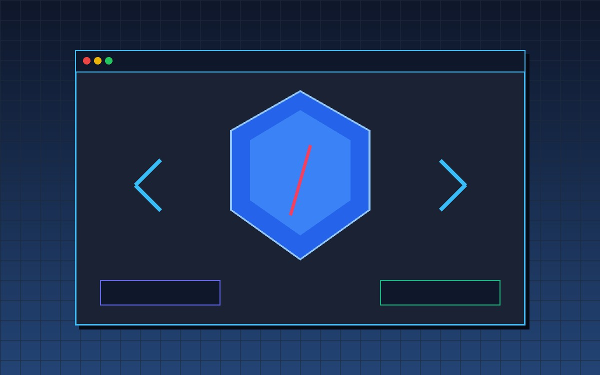

ГРАФІКА ДЛЯ ВЕБ: ФОРМАТИ, ОПТИМІЗАЦІЯ ТА АВТОРСЬКЕ ПРАВО
Понад 65% загальної ваги сучасного сайту припадає на графічні зображення. Якщо вставити на сторінку «сирі» фотографії з камери смартфона по 8–10 МБ, мобільні користувачі закриють сайт ще до його завантаження. На цьому уроці ти дізнаєшся, чим пікселі відрізняються від математичних кривих, чому формат SVG став стандартом сучасного UI, як новітні алгоритми WebP та AVIF зберігають мегабайти трафіку і де легально брати безкоштовні ілюстрації без порушення закону про авторське право.
Растрова vs Векторна графіка у вебі
Усе різноманіття веб-графіки поділяється на два принципово різних світи: растровий (піксельна сітка) та векторний (математичні координати). Розуміння цієї різниці вберігає від фатальних помилок у верстці.
Принцип побудови: Зображення складається з прямокутної матриці крихітних кольорових точок — пікселів (px). Кожен піксель має фіксовані координати та точний колір (наприклад, у моделі RGB: Червоний, Зелений, Синій).
- Ідеально для фотографій: передає мільйони відтінків, плавні світлотіні, складні текстури (шкіра, листя, вода, хмари).
- Втрата якості при масштабуванні: якщо збільшити растрову картинку, браузер вимушений розтягувати готові пікселі, виникає ефект драбинки (пікселізація) та сильне розмиття.
- Великий обсяг файлу: браузер повинен завантажити інформацію про кожен із мільйонів пікселів.
- Основні формати: JPEG, PNG, WebP, AVIF, GIF.
Принцип побудови: Зображення описується за допомогою математичних геометричних примітивів: точок, ліній, кіл, полігонів та кривих Безьє (Bézier curves). У файлі зберігаються не пікселі, а інструкції, як їх намалювати.
- Нескінченна чіткість: можна збільшити картинку в 1000 разів або роздрукувати на величезному білборді — лінії залишаться ідеально гладкими.
- Мізерна вага файлу: проста іконка чи логотип описується кількома рядками тексту і важить усього 1–5 КБ.
- Керування через CSS та JS: оскільки SVG є частиною DOM, колір, товщину та анімацію ліній можна змінювати кодом у реальному часі!
- Не підходить для фотографій: математичний опис кожної деталі реального пейзажу перетворив би файл на гігабайти складних формул.
- Головний веб-формат: SVG (Scalable Vector Graphics).
Як вибрати тип графіки за 1 секунду?
Це фотографія з камери чи реалістичний живопис? ➔ Растр (WebP / AVIF / JPEG).
Це логотип, кнопка, іконка, діаграма, прапор чи декоративний орнамент? ➔ Вектор (SVG).
Анатомія сучасних форматів зображень
У шкільному підручнику розглядаються класичні формати (JPEG, PNG, GIF). Проте сучасний веб зробив гігантський стрибок уперед! Познайомимося як із перевіреною класикою, так і з сучасними стандартами нового покоління.
| Формат | Тип | Прозорість (Alpha) | Анімація | Тип стиснення | Середня вага | Головне призначення | Підтримка браузерами |
|---|---|---|---|---|---|---|---|
| SVG | Векторний (XML) | ✔ Повна (векторна) | ✔ CSS / JS / SMIL | Без втрат (Gzip / Brotli) | 1 – 15 КБ | Логотипи, UI-іконки, схеми, кнопки, графіка Retina | 100% (усі браузери) |
| AVIF | Растровий (AV1) | ✔ Повноцінна 8/10-bit | ✔ Анімований AVIFS | З втратами / Без втрат | 30 – 80 КБ (-50% vs JPG) | Найсучасніший формат для фотографій, HDR-контент | 94%+ (Chrome, Safari, FF) |
| WebP | Растровий (VP8) | ✔ 8-бітний альфа-канал | ✔ Анімований WebP | З втратами / Без втрат | 40 – 110 КБ (-30% vs JPG) | Універсальний стандарт для фото та ілюстрацій з прозорістю | 97%+ (Усі сучасні) |
| JPEG / JPG | Растровий (DCT) | ✖ Не підтримує | ✖ Немає | З втратами (Lossy) | 120 – 350 КБ | Класичні фотографії без прозорості (надійний fallback) | 100% (з 1992 року) |
| PNG | Растровий (Deflate) | ✔ Прозорість без втрат | ✖ Стандартний ні | Без втрат (Lossless) | 200 – 900 КБ | Скріншоти з текстом, складна графіка з чіткими лініями | 100% |
| GIF | Растровий (LZW) | ⚠ Тільки 1-біт (зубці) | ✔ Кадрова | Без втрат (але max 256 кол.) | 500 – 3000 КБ (Дуже важкий!) | Застарілі анімовані меми (краще замінювати на WebP/MP4) | 100% |
SVG можна вставляти як звичайну картинку <img src="logo.svg">, а можна вставляти прямо в HTML як тег <svg>...</svg>. Перевага другого варіанту — можливість стилізувати внутрішні елементи через CSS: наприклад, змінювати колір при ховері svg:hover path { fill: #ff4732; } без надсилання додаткових HTTP-запитів до сервера.
WebP використовує передовий алгоритм предиктивного кодування кадрів VP8. При однаковій візуальній якості файл WebP на 26–34% легший за JPEG. Крім того, WebP вирішує головний недолік JPEG: він підтримує 8-бітну прозорість! Тобто одне фото у WebP поєднує фотореалістичність JPEG та прозорість PNG.
Формат AVIF базується на відеокодеку AV1, розробленому гігантами Google, Apple, Microsoft, Netflix та Mozilla. Він здатний стискати зображення ще на 20–30% сильніше за WebP, зберігаючи дрібні деталі, та підтримує 10- і 12-бітний колірний простір HDR (High Dynamic Range) з розширеним колірним охопленням Rec. 2020.
Оптимізація графіки та швидкість сайту
Чому Google зменшує позицію сайту в пошуку за «повільні» картинки, як зберегти 80% трафіку без видимих втрат якості та як правильно верстати тег <img> за сучасними стандартами.
Доступність (a11y) та SEO
Атрибут alt є обов'язковим за стандартом W3C! Його озвучують скрін-рідери (програми для незрячих користувачів), і саме його зчитують пошукові роботи Google. Якщо картинка не завантажиться через поганий інтернет, користувач побачить текст з alt.
✔ alt="Учні 11 класу проводять дослід у кабінеті фізики"
Захист від зсуву макета (CLS)
Як зазначається у шкільному посібнику (§3.1), якщо не вказати розміри, браузер не знає геометрію зображення до його завантаження. Коли картинка нарешті з'являється, весь текст різко підстрибує донизу (Cumulative Layout Shift — CLS). Вказуйте реальні width="800" height="500" — тоді браузер зарезервує точне місце ще до завантаження байтів!
Відкладене завантаження
Навіщо завантажувати 20 фотографій у футері сторінки, якщо користувач ще навіть не почав скролити? Атрибут loading="lazy" наказує браузеру завантажувати зображення лише тоді, коли воно наближається до зони видимості екрана. Це економить до 70% стартового інтернет-трафіку!
Сучасні формати без ризику
Що робити, якщо старий браузер не вміє читати AVIF? Використовувати контейнер <picture>! Браузер сам перевірить: якщо він підтримує AVIF — завантажить його; якщо ні — візьме WebP; якщо й WebP не підтримується — відкриє старий надійний JPEG.
<figure>
<picture>
<!-- Сучасний браузер обере ультралегкий AVIF -->
<source type="image/avif" srcset="photo.avif 1x, photo@2x.avif 2x">
<!-- Фолбек для браузерів без підтримки AVIF -->
<source type="image/webp" srcset="photo.webp 1x, photo@2x.webp 2x">
<!-- Базовий тег img з обов'язковими розмірами для резервування місця -->
<img src="photo.jpg"
alt="Студенти інженерного факультету працюють за комп'ютерами в лабораторії"
width="1200" height="675"
loading="lazy"
decoding="async">
</picture>
<figcaption>Практичні заняття з веб-розробки. Фото: Сергій Коваленко (CC BY 4.0)</figcaption>
</figure>Авторське право та легальний контент
Чому фраза «я просто знайшов це в Google» не звільняє від юридичної відповідальності, як працюють вільні ліцензії Creative Commons та де брати якісні графічні ресурси безкоштовно.
⚖️ Головна юридична аксіома Інтернету
Відповідно до Закону України «Про авторське право і суміжні права» та міжнародної Бернської конвенції, будь-яка фотографія, малюнок або 3D-модель отримує правовий захист у момент її створення. Той факт, що картинка відображається у Google Зображеннях, означає лише те, що пошуковий робот її проіндексував, але це не дає права копіювати її на власний сайт! Використання чужої графіки без письмового дозволу автора є порушенням прав інтелектуальної власності.
Ліцензійна родина Creative Commons (CC)
Організація Creative Commons створила зручні публічні ліцензії, які дозволяють авторам ділитися своїми творами зі світом на чітких умовах. Натисніть на картку ліцензії, щоб дізнатися всі правила:
- ✔ Вільне комерційне та некомерційне використання
- ✔ Можна змінювати, кадрувати та поєднувати
- ✔ Вказівка автора не є обов'язковою
- ✔ Будь-яке використання (в т.ч. комерційне)
- ✔ Дозволено змінювати та модифікувати
- ★ Обов'язково: вказати автора та джерело
- ✔ Вільне поширення та копіювання
- ★ Обов'язкова вказівка автора
- ★ Новий похідний твір має таку саму ліцензію
- ✔ Ідеально для школи, навчання та некомерції
- ✖ Заборонено: комерційне використання
- ★ Обов'язкова вказівка автора
- ✔ Вільне копіювання оригінального твору
- ✖ Заборонено: редагувати, кадрувати, міняти
- ★ Обов'язкова вказівка автора
CC BY (Attribution / Зазначення авторства)
Золотий стандарт відкритих знань! Ви можете робити з файлом що завгодно (змінювати, використовувати у комерційних проєктах, поєднувати з іншими роботами). Єдина вимога: ви зобов'язані вказати ім'я автора, назву твору, дати посилання на джерело та саму ліцензію CC BY.
📁 Безкоштовні легальні джерела для учнівських сайтів
Закладіть ці ресурси у закладки — тут можна легально завантажувати якісну графіку без порушення авторських прав:
А як щодо зображень, згенерованих ШІ (Midjourney, DALL-E, Recraft)?
Згідно з міжнародною практикою та рішеннями Бюро авторського права США, твори, повністю згенеровані штучним інтелектом без суттєвого творчого вкладу людини, не підлягають традиційному захисту авторським правом і переходять у суспільне надбання (Public Domain). Ви можете вільно використовувати такі зображення на своєму сайті, проте згідно з академічною доброчесністю у підписі <figcaption> завжди рекомендується вказувати інструмент: «Зображення згенеровано за допомогою Recraft AI».
Web Graphics Lab: Практична лабораторія
Тренажер дозволяє на практиці дослідити поведінку растру й вектору при наближенні, протестувати рівень стиснення графіки та згенерувати еталонний доступний HTML-код для свого сайту.
Модуль 1: Дослідження масштабу (Zoom) та алгоритмів стиснення
Керуйте повзунком збільшення, щоб побачити руйнування растрових пікселів проти бездоганної математичної чіткості SVG. Змінюйте формат і якість для розрахунку ваги файлу та швидкості передачі даних.
Модуль 2: Кейс-тренажер «Архітектор форматів»
Виступайте в ролі провідного веб-архітектора! Оберіть оптимальний графічний формат для 5 реальних практичних ситуацій та отримайте моментальний інженерний розбір кожного рішення.
Модуль 3: Генератор безпечного коду <picture> та ліцензій
Налаштуйте параметри зображення за допомогою форми — праворуч автоматично згенерується чистий валідний HTML5-код з усіма атрибутами доступності (a11y), захистом від CLS та офіційним посиланням на автора за ліцензією.
Генерація коду...
